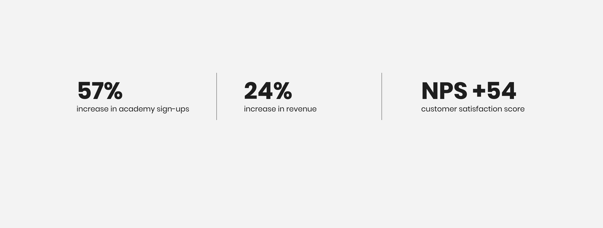
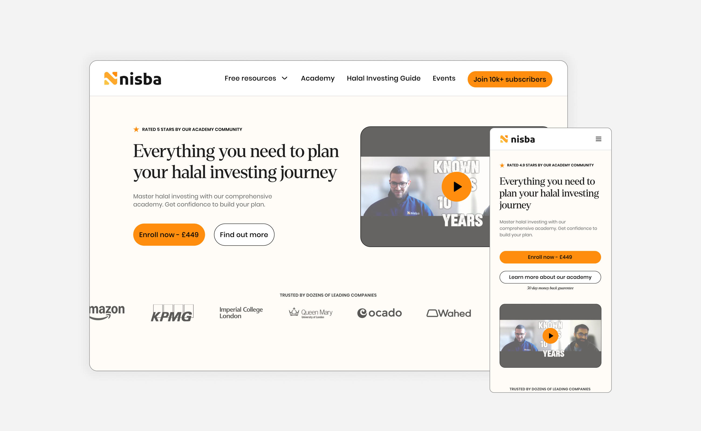
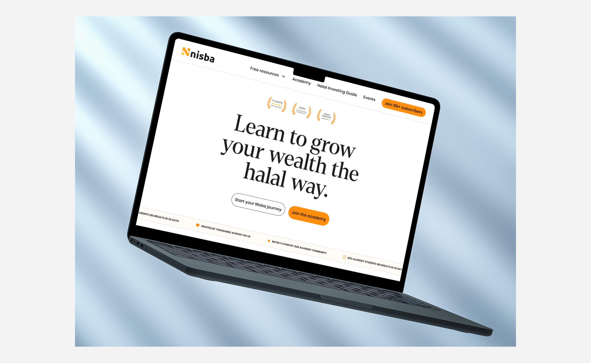

Nisba
Redesigning the brand experience and website for a halal investment education platform, transforming trust, clarity, and conversion for an audience of 10,000+ Muslim investors.
Results
57%
From streamlining the purchase flow alone, before the full redesign went live
+54
With satisfaction at 8.5/10, confirming strong product-market fit once users engaged
76%
Discovery insight that reshaped Nisba's entire go-to-market strategy beyond the website

The problem
Nisba is a halal investing education platform teaching Muslims the fundamentals of Islamic finance. They had over 10,000 email subscribers and thousands of website visitors every week, but only a tiny percentage were converting to paid customers.
The brand had been built by the founders on Kajabi. It felt junior, scrappy, and didn't convey the credibility of two founders with deep backgrounds in corporate banking and finance. Users reported in our research that the brand didn't feel trustworthy enough for a financial education platform, and that distrust was directly preventing purchases.
The website compounded the problem. Every product was competing for attention above the fold. Purchase journeys were buried behind confusing click paths. The Academy, their highest-value product, required users to click an image on the homepage, land on a sales page, click a CTA button that was actually an anchor tag to the bottom of the page, find an identical button, and only then reach checkout. Most users never made it through.

Discovery
We started with stakeholder interviews with the founders to understand their vision, how they got to where they are, and what success would look like. From there, we ran a series of research and audit activities.
A full UX audit of every page on the Nisba website, documenting what worked, what didn't, and where users were falling off. A competitor audit analysing what established players in the halal finance space were doing well and where Nisba could differentiate. Workshops to define user personas and map user journeys across the site. And a customer survey sent to Nisba's 10,000+ email subscribers, the first survey the company had ever conducted.

Brand perception was the biggest issue. Users consistently felt the brand didn't look trustworthy enough for a financial platform. The founders had the credentials, corporate banking backgrounds, deep financial knowledge, but the platform wasn't communicating any of that. The gap between the founders' expertise and the brand's visual credibility was directly costing them customers.
We also discovered that the primary customer segment wasn't who the founders assumed. The core audience was young female Muslim professionals taking their finances seriously, alongside couples who were learning about halal investing together. One partner would typically complete the training and teach the other. This insight influenced everything from tone to imagery to content structure.
The NPS score came back at +54 with satisfaction at 8.5/10, confirming that once people did engage with Nisba's content, they valued it highly. The problem wasn't the product. It was the brand and the website failing to convert interest into trust and trust into purchase.

Brand direction
We ran a stylescape process to explore distinct visual directions for the brand. The founders shared websites they admired and explained why. We mapped those against the competitor landscape and the current Nisba brand to see the gap between where they were and where they wanted to be.
We presented three routes. Route 1, Integrity, was anchored in trust, reliability, and institutional credibility. Route 2, Approachable, was warmer and more lively, with a passionate and inviting tone. Route 3, Edgy, was playful and realistic, leaning into Nisba's strong TikTok presence and younger audience.

The founders chose Route 1, Integrity, but with touches of approachability blended in from Route 2.
The deciding factor wasn't just today's audience. During persona workshops, we had mapped three customer tiers: the current customer, the target customer, and the dream customer. Nisba's long-term vision is to offer a done-for-you investment service, essentially acting as a halal brokerage. That future customer has significantly more wealth and expects the credibility and professionalism of a financial institution.
Choosing the integrity route meant building a brand that would serve today's audience while growing into tomorrow's ambition. The playful, TikTok-native energy could live in social content. The core brand needed to earn trust at a higher level.

Website redesign
The website redesign started with wireframes focused on simplifying user journeys. The core principle was to reduce the steps between landing and purchasing to the absolute minimum.
The Academy and Playbook, Nisba's two core products, were added to the main navigation. Previously, there was no clear way to find the Academy from the nav. We added a clear CTA button in the header linking directly to the Academy. One click from anywhere on the site to their most important conversion point.
On every sales page, we introduced dual CTAs at the top: one button to purchase immediately, linking directly to checkout with no anchor tags or hidden steps, and one button to learn more, scrolling down for additional information. Users who were ready to buy could do so instantly.

The old website had zero social proof. No testimonials, no student numbers, no trust signals. For a financial education platform asking people to invest their money and time, that absence was actively damaging conversion.
We introduced trust signals throughout: student numbers, testimonial quotes, founder credentials, community size, and course completion data. Every page that asked for a purchase gave users a reason to believe first.

Beyond the core product pages, we designed a suite of free calculators and tools that served as lead magnets, giving users immediate value while capturing contact information. These tools provided a low-friction entry point for users who weren't ready to commit to the full Academy but wanted to start understanding halal investing.

Key screens
The homepage was rebuilt around a clear hierarchy: hero with a single, focused value proposition, followed by trust signals, then product pathways, then social proof and community. No more competing CTAs above the fold. One clear message, one clear action.

The highest-impact page on the site. Dual CTA at the top, clear pricing, founder credentials, student testimonials, curriculum breakdown, and a final CTA at the bottom. Every section earns the next scroll.

Given that a significant portion of Nisba's traffic comes from social media, TikTok and Instagram, the mobile experience needed to be just as clear and conversion-focused as desktop, despite the reduced screen space.

Design system
The visual design wasn't just for the website. We knew the Halal Screener product was on the roadmap, so the design system was built with future products in mind. Colour palette, typography, button styles, component patterns, and spacing rules were all designed to work across marketing pages, product interfaces, and event materials.
We removed serif fonts for digital product use and established a purely sans-serif typographic system, while keeping the serif for editorial and marketing content where warmth and approachability mattered. The system gave Nisba the ability to maintain brand consistency as they expanded into new products without needing to redesign from scratch each time.

Impact
Before the full website went live, several elements from the new designs were implemented into the existing site: products added to the navigation, direct CTA in the header, dual purchase buttons on sales pages, and trust signals across key pages.
The result of the streamlined Academy purchase flow alone was a 57% increase in sign-ups, Nisba's best academy sales performance ever.
The full redesigned website is currently in development and will launch shortly. Based on the improvements already seen from partial implementation, the founders expect significant further gains once the complete experience is live.
The brand and website project has led directly to an ongoing relationship. The discovery insights have reshaped Nisba's business strategy beyond design: they now run significantly more in-person events and webinars after the survey revealed the 76% event-to-purchase conversion rate, and they've adjusted their content and marketing to better serve their core audience of young female Muslim professionals and couples.
